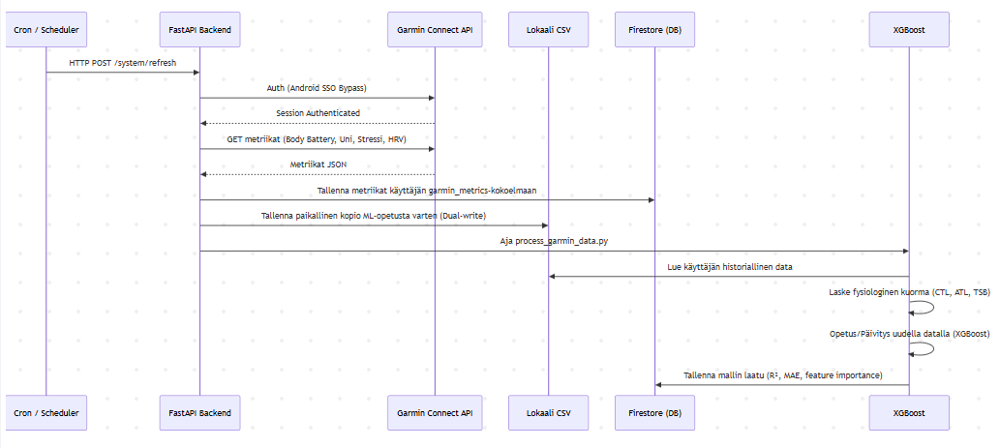
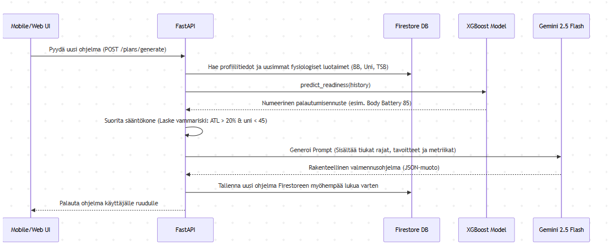
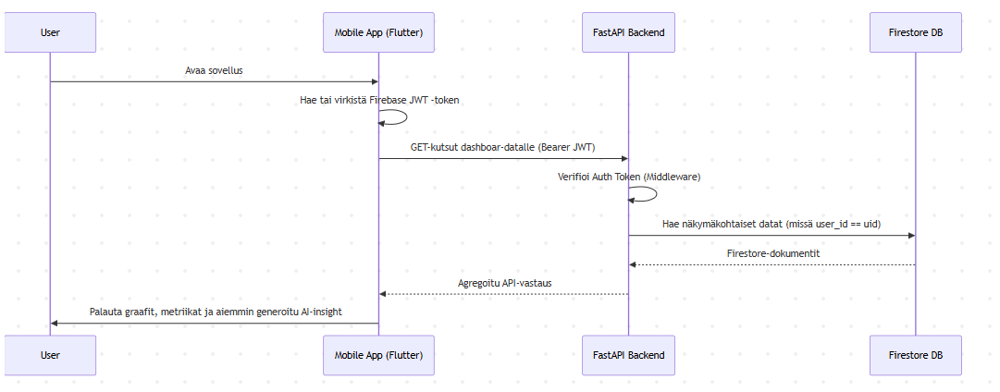

Personal AI Coach: Datan Kulku (Data Flow)
Tämä dokumentti kuvaa tarkemmin, miten data liikkuu Health AI -järjestelmässä aina Garminin palvelimilta koneoppimismallin ja Gemini-tekoälyn kautta käyttäjän mobiili- ja web-käyttöliittymiin.
1. Ydindatakomponentit (Data Entities)
Järjestelmä käsittelee seuraavia päädatakokonaisuuksia: - Tunnistetiedot (Credentials): Salattu AES-256 -muodossa, käytetään ainoastaan taustajärjestelmässä yhteyden ylläpitoon (Garmin SSO). - Fysiologinen data (Metrics): Body Battery, leposyke, uni (kesto ja laatu), HRV, stressi. Nämä ohjaavat tekoälyn valmennuspäätöksiä. - Harjoitusdata (Workouts): Suoritetut treenit ja suunnitellut treenit (AI:n tekemät ohjelmat). - Tavoitteet (Goals): Käyttäjän asettamat määrälliset rajapyykit (esim. matkatavoite viikossa) tai kisatavoitteet. - AI-tuotokset (Insights/Plans): Päivittäiset aamubriefingit ja treeniohjelmat, joita tallennetaan tietokantaan välimuistiin API-kutsujen minimoimiseksi.
2. Pääprosessien Sekvenssikaaviot (Sequence Diagrams)
2.1 Taustasynkronointi ja Datan Rikastus (Background Sync & Ingestion)
Tämä prosessi ajetaan joko säännöllisesti taustalla (Cloud Scheduler) tai käyttäjän manuaalisesta pyynnöstä (POST /system/refresh). Tavoitteena on hakea tuorein fysiologinen data, tallentaa se pysyvästi ja opettaa ML-mallia.

sequenceDiagram
participant Scheduler as Cron / Scheduler
participant API as FastAPI Backend
participant Garmin as Garmin Connect API
participant CSV as Lokaali CSV
participant DB as Firestore (DB)
participant ML as XGBoost
Scheduler->>API: HTTP POST /system/refresh
API->>Garmin: Auth (Android SSO Bypass)
Garmin-->>API: Session Authenticated
API->>Garmin: GET metriikat (Body Battery, Uni, Stressi, HRV)
Garmin-->>API: Metriikat JSON
API->>DB: Tallenna metriikat käyttäjän garmin_metrics-kokoelmaan
API->>CSV: Tallenna paikallinen kopio ML-opetusta varten (Dual-write)
API->>ML: Aja process_garmin_data.py
ML->>CSV: Lue käyttäjän historiallinen data
ML->>ML: Laske fysiologinen kuorma (CTL, ATL, TSB)
ML->>ML: Opetus/Päivitys uudella datalla (XGBoost)
ML->>DB: Tallenna mallin laatu (R², MAE, feature importance)
2.2 Proaktiivisen Tekoälyvalmentajan Kierto (AI Coach Generation)
Tämä kuvaa, miten Gemini 2.0 Flash muodostaa valmennus- tai viikko-ohjelman hyödyntäen aiemmin tietokantaan tallennettua luotettavaa dataa.

sequenceDiagram
participant UI as Mobile/Web UI
participant API as FastAPI
participant DB as Firestore DB
participant ML as XGBoost Model
participant Gemini as Gemini 2.0 Flash
UI->>API: Pyydä uusi ohjelma (POST /plans/generate)
API->>DB: Hae profiilitiedot ja uusimmat fysiologiset luotaimet (BB, Uni, TSB)
API->>ML: predict_readiness(history)
ML-->>API: Numeerinen palautumisennuste (esim. Body Battery 85)
API->>API: Suorita sääntökone (Laske vammariski: ATL > 20% & uni < 45)
API->>Gemini: Generoi Prompt (Sisältää tiukat rajat, tavoitteet ja metriikat)
Gemini-->>API: Rakenteellinen valmennusohjelma (JSON-muoto)
API->>DB: Tallenna uusi ohjelma Firestoreen myöhempää lukua varten
API-->>UI: Palauta ohjelma käyttäjälle ruudulle
2.3 Käyttöliittymän Datan Kulutus (UI Data Fetch)
Web- ja mobiilialustat eivät ikinä keskustele reaaliajassa ulkoisten rajapintojen (kuten Garminin) kanssa sovellusta avattaessa, jotta sovellus on nopea ja saavutettavissa offline/rate limit -tilanteissa.

sequenceDiagram
participant User
participant Mobile as Mobile App (Flutter)
participant API as FastAPI Backend
participant DB as Firestore DB
User->>Mobile: Avaa sovellus
Mobile->>Mobile: Hae tai virkistä Firebase JWT -token
Mobile->>API: GET-kutsut dashboar-datalle (Bearer JWT)
API->>API: Verifioi Auth Token (Middleware)
API->>DB: Hae näkymäkohtaiset datat (missä user_id == uid)
DB-->>API: Firestore-dokumentit
API-->>Mobile: Agregoitu API-vastaus
Mobile->>User: Palauta graafit, metriikat ja aiemmin generoitu AI-insight
3. Välimuisti (Caching) ja Datan Pysyvyys (Persistence)
Järjestelmä on suunniteltu huomioiden skaalautuvuus ja ulkoisten rajapintojen asettamat rajoitukset (esim. Garminin 429 Rate Limits / Gemini Quotas).
- Asynkroninen Garmin Ingestion: Järjestelmä hakee dataa ensisijaisesti taustalla tai erillisestä latauspyynnöstä. Data tallennetaan Firestoreen. Tämän jälkeen kaikki analytiikka ja UI-toiminnallisuus operoi pelkällä Firestore-datalla.
- Koneoppimisen Opetusdata (CSV vs DB): Kustannustehokkuuden vuoksi massiivinen koneoppimisdata cachataan taustajärjestelmässä (FastAPI) nopeaan paikalliseen CSV/tiedostokerrokseen.
- AI-tulosten välimuistitus: Oivallukset (Insight) lasketaan tyypillisesti vain kerran päivässä. FastAPI tutkii ensin Firestoren. Jos tälle päivälle tehty analyysi on jo olemassa, se palautetaan salamannopeasti säästäen kallista LLM-kutsua.
4. Virhetilanteiden Ratkaisu Datavirrassa (Edge Cases)
- Garmin Rate Limit (429): Jos Garmin pyytää hidastamaan (Too Many Requests), FastAPI aktivoi heti in-memory lukon (Lock) esimerkiksi 15 minuutiksi. Sovellus toimii käyttäjälle normaalisti, ja se esittää Firestoressa olevaa vanhempaa historiaa, kehottaen yrittämään synkronointia hetken kuluttua uudelleen.
- MFA (Monivaiheinen todennus) katkaisee yhteyden: Kun Garmin vaatii vahvennettua todennusta, taustasynkronointi pysähtyy ja taustajärjestelmä tallentaa lipputiedon
garmin_mfa_required = True. Etusivun käyttöliittymä reagoi tähän viittaukseen heti lukemalla datan, avaten käyttäjälle koodikyselynäkymän, jolla datavirta palautetaan jälleen toimintaan.